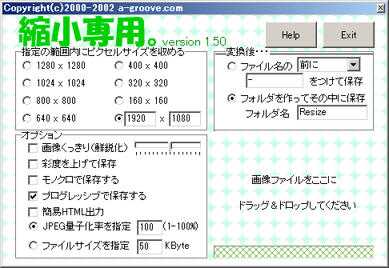

2015年の展示発表の作り方。
- アニメーションの素となる、写真を撮影する。
- サーバに画像を保存する。（このとき、アニメーションの仮タイトルを付けたフォルダに保存すること!!!）
- 縮小専用。（ShukuSen.exe）を使い、

↑の設定になっているか確認する。（なっていなかったら上の設定と同じにする。）
- 素材用の画像フォルダを開き、[Ctrl]キーと[A]キーを押して、フォルダ内全選択する。
- 全選択したものを、"画像をここにドラッグ&ドロップしてください"にD&Dする。
- Resizeフォルダの上の階層にある画像（縮小前の大きすぎる画像）はZip圧縮するなり、消去するなり、ご自由に!!!
続きは時間の空いたときに下に書いていきます